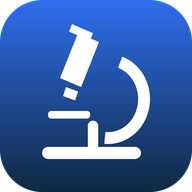

Microscopic System
جاري التحميل…
فتح البرنامج
الإعدادات
السحابة فقط
المركز المحلي فقط
تلقائي (السحابة، ولو مش متاحة المركز)
عنوان السحابة
عنوان المركز المحلي (مثال: 192.168.1.20:8080)
حفظ
اختبار الاتصال
تنبيه: السحابة والمركز قاعدتا بيانات منفصلتان لحد ما تتفعّل المزامنة بينهما، فالتقارير المكتوبة على واحدة مش هتظهر على التانية.